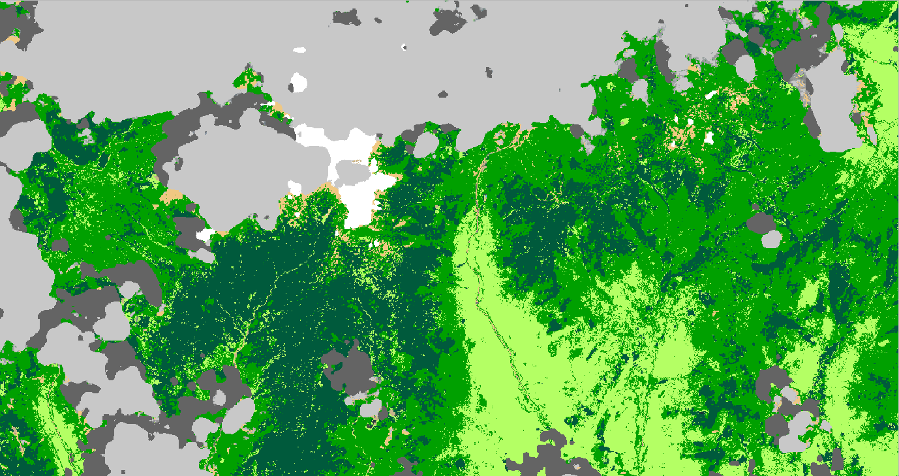

Explore the difference between a true-color Sentinel-2 satellite image and its corresponding land cover classification. Drag the slider bar to reveal more of either the original satellite view or the classified land cover map.
Satellite imagery offers invaluable insights into our planet. The Sentinel-2 mission, a part of the European Union's Copernicus programme, provides high-resolution optical imagery for land monitoring, emergency services, and security. Below, we detail how these specific image products are created.
A True Color composite image is created by combining specific spectral bands to visually represent the Earth's surface as it would appear to the human eye. This type of composite is often referred to as a "natural color" image.
By assigning the Red band to the Red color channel of the display, the Green band to the Green color channel, and the Blue band to the Blue color channel (i.e., **RGB = B4, B3, B2**), we get an image that closely resembles what we would see from space. This makes it ideal for general visualization, identifying urban areas, bare ground, and recognizing cloud formations.
A Land Cover Classification image is a thematic map derived from **Sentinel-2 L2A satellite data**, where each pixel is assigned to a specific land cover class based on its spectral characteristics. Unlike True Color images, which are direct representations of light reflection, classification images are the result of advanced data analysis and machine learning algorithms.
Land Cover Classification images are crucial for environmental monitoring, urban planning, agriculture management, and understanding ecological changes over time. They provide a simplified yet powerful thematic view of the landscape.